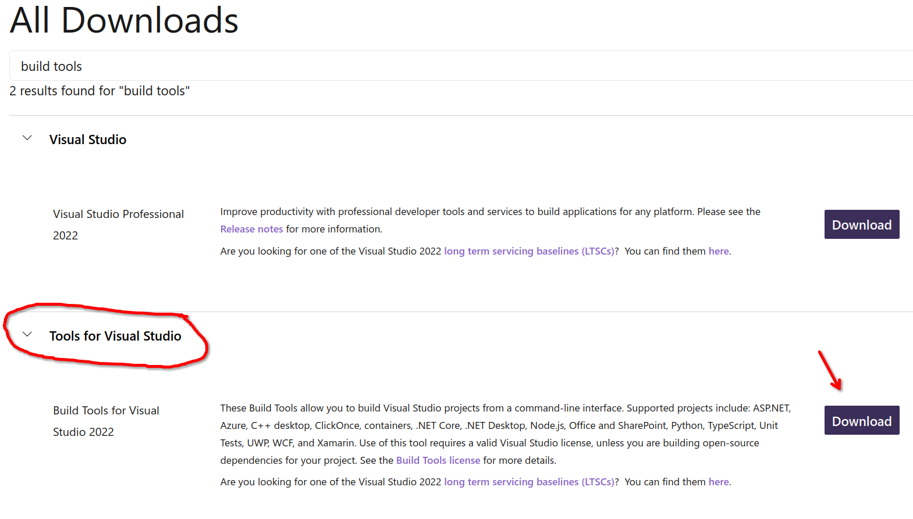
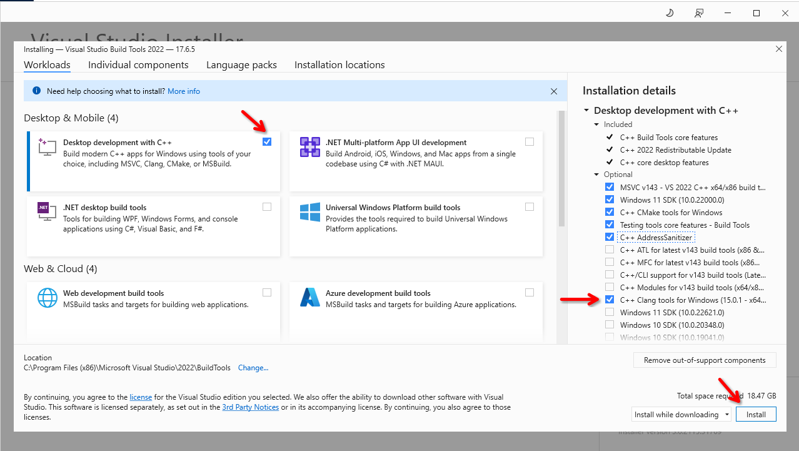
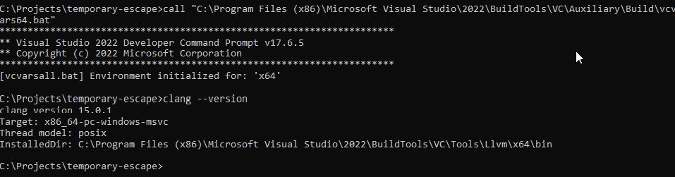

Setup - Windows#
1. Requirements#
You must have Windows 10 64-bit or later, or Windows Server 2019 or later.
The game is compiled for x64 architecture only.
Visual Studio Tools are needed with the Clang compiler.
MinGW, MSys, or Cygwin are not supported.
2. Install dependencies#
First you need the Visual Studio Build Tools. This already comes with the Visual Studio IDE, but you don’t need to install the entire IDE, the Build Tools alone is enough. Go to Visual Studio Download page and at the bottom in the section “All Downloads” look for “Tools for Visual Studio”. Download it and install it.

Download it and install it. Once the window opens, check the “Desktop development with C++” and from the right hand side “Installation details” check the “C++ Clang tools for Windows” in the “Optional” section. That’s all you need, click the Install button.

You will also need to install the following tools:
Chocolately (follow the “Install Chocolately for Individual Use”)
One the Git and Chocolately is installed, open PowerShell as an Administrator, and install the following packages:
choco install cmake ninja
3. Option A: Command line only#
Note
To get the best experience developing this game, it is recommended to use an IDE. See the section for the Visual Studio Code below, or the section for the JetBrains CLion below.
First, you will need to clone the source code and fetch the git submodules.
git clone https://github.com/temporary-escape/temporary-escape.git
cd ./temporary-escape
git submodule update --init
Next, create a build directory. This directory will contain the temporary files for compiling the game.
md build
Before you call the CMake configure command, you must call the vcvars64.bat file from the Visual Studio toolchain.
This is done by calling the bah script from your terminal. This must be done every time you want to call
the CMake configure command.
# MUST BE DONE VIA CMD!!!
# The script can also be located at ("Community" sub-folder):
# C:\Program Files (x86)\Microsoft Visual Studio\2022\Community\VC\Auxiliary\Build\vcvars64.bat
call "C:\Program Files (x86)\Microsoft Visual Studio\2022\BuildTools\VC\Auxiliary\Build\vcvars64.bat"
# To verify that clang is present
# Must print some version number
clang --version

Next, configure the project with CMake. Choose the ninja-msvc preset and use the Debug build type. This
needs to be done only once. When you delete the build folder you must re-do this step.
Warning
This next command will download all of the C++ dependencies, compile them, and configure the game’s source code. This may take up to 1 hour to complete and may take up to 3GB of disk space. The dependencies are installed locally within the build folder only.
Hint
Debug builds are useful for debugging, but it makes the game slow. This is especially noticable when
generating a new universe. It may take up to 10x longer. Prefer to use Release unless you need debugging support.
cmake --preset ninja-msvc -DCMAKE_INSTALL_PREFIX=./install
At the end you should see something as “Build files have been written to: bla bla bla”.
Next, compile the game. You can replace the -j X with number of CPU cores available on your computer.
cmake --build ./build --target TemporaryEscapeMain -j 4
At the end you should see something as “Linking CXX executable TemporaryEscape”.
To run the game, you must run it with --root argument pointing to the cloned repository.
Warning
When running the game in a singleplayer or multiplayer mode for the first time from the source code, the game will compile shader code and will compress the textures from png format into ktx2 format. This may take several minutes. This is done only once.
# Run the game with --root argument pointing to the cloned repository!
./build/TemporaryEscape --root C:\Projects\temporary-escape
3. Option B: Visual Studio Code#
First, you will need to clone the source code and fetch the git submodules.
git clone https://github.com/temporary-escape/temporary-escape.git
cd ./temporary-escape
git submodule update --init
3. Option C: Visual Studio IDE 2022#
First, you will need to clone the source code and fetch the git submodules.
git clone https://github.com/temporary-escape/temporary-escape.git
cd ./temporary-escape
git submodule update --init
3. Option D: CLion#
First, you will need to clone the source code and fetch the git submodules.
git clone https://github.com/temporary-escape/temporary-escape.git
cd ./temporary-escape
git submodule update --init
4. Installing the game (optional)#
To install the game, open a command line, go to the project folder, and type the following command below.
Make sure that you have used -DCMAKE_INSTALL_PREFIX=/some/path during the configuration. If you are using
a CMake preset (via --preset) then the install folder is going to be a directory named install inside the
project folder. It will be created during the install command as shown below.
# If you are using CLion the folder is most likely "cmake-build-debug" or "cmake-build-release"
cmake --build ./build --target install